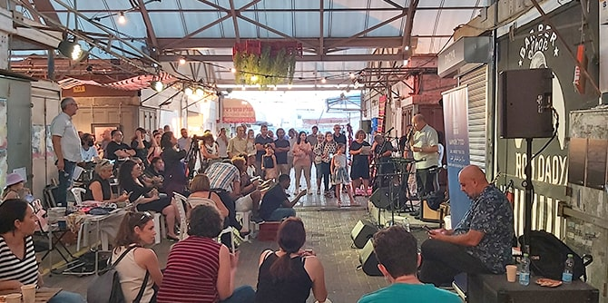
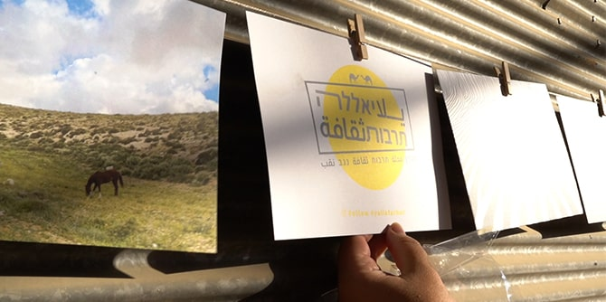

אירוע הסיום של תוכנית מנדל למנהיגות תרבות בנגב, מחזור ג', נבנה והופק על-ידי עמיתי התוכנית כ"רכיב מעשי" קבוצתי של התוכנית, בהובלה משותפת עם מנהליה:
פרופ' דנה אריאלי וד"ר יצחק (קיקי) אהרונוביץ. ראשיתו של האירוע בתרגיל שעסק בתרבות בימי הקורונה, אשר התקיים בחודש דצמבר 2020. ממנו יצאו העמיתים למהלך שארך כמה חודשים ובמסגרתו התלבטו מה יהיה אופי האירוע, כמה מיזמים יוצגו בו, האם תיבחר תמה אחידה לכל המיזמים, איזה סוג של זיקה תתקיים בין כל אחד מהמיצגים לבין האירוע הכללי ועוד.

הוחלט לקיים את האירוע במתחם השוק העירוני בבאר שבע, כמהלך המכוון להתחדשות עירונית באחד מסמלי העיר. הוא נבנה תוך קשר עם גורמים מוניציפליים, המקדמים מהלך רחב של התחדשות עירונית. כחלק מתכנון הפרויקט נוצר קשר עם מנהלת השוק והוחלט על סיור לוקיישנים במקום. בעקבות הסיור החליטו העמיתים מי יציג במרחב הפתוח, מי יציגו בחללים סגורים, איך למקסם את הקשר שבין המיזמים לבין המיקום שנבחר וכיצד בא לידי ביטוי הקשר בין השוק לבין המיזמים. עוד הוחלט כי יתקיימו שני ימי הקמה מרוכזים בשוק שתכליתם להתמודד עם כל האתגרים שהמרחב האורבני המסוים הזה הציב בפני העמיתים.
הקבוצה בנתה חזון משותף של "placemaking" באמצעות פיתוח פעילות תרבות בת-קיימא המשפיעה על המרחב. המהלך התבסס על הרעיון של עירוב שימושים בשוק: השטח המשמש למסחר במהלך היום, מתפנה מדי ערב ומותיר שטח עם פוטנציאל להתרחשות תרבותית המשפיעה על העיר ומחוצה לה
.
באירוע המרגש נכחו כ-250 מוזמנים ואורחים, בהם בוגרי מחזורים א' ו-ב' של התוכנית וחברים אחרים בקהילת מנדל בנגב. בפתיחת הערב בירכו את הבוגרים הטריים מנכ״ל קרן מנדל-ישראל, משה ויגדור; מנהלת מרכז מנדל למנהיגות בנגב, ד"ר עדי ניר שגיא; מנכ"ל חברת כיוונים, שלומי נומה; וראש המועצה האזורית נווה מדבר, אברהים אלהואשלה.
לאורך הערב הציגו העמיתים את יצירותיהם בתוך חללים בשוק. בין היצירות שהוצגו: אמנות בדואית נשית, הצגת יחיד על מציאות הקורונה, צילומים אמנותיים העוסקים בנושאים חברתיים בנגב, יצירות גרפיות שמתמקדות בדמויות המהוות סמל למקומיות נגבית ועוד.
האירוע יצר הדים חיוביים מאוד והמחיש את חשיבותה של מנהיגות בתחום התרבות, המתבוננת בסביבתה ופועלת לשיפור המציאות במרחב דרך עשייה תרבותית שמחברת בין אנשים ומקום ומפגישה בין קהילות הנגב השונות.

עקב הצלחת האירוע, חברת "כיוונים" (החברה לתרבות ופנאי של עיריית באר שבע) וחברת יעדים (החברה העירונית לפיתוח עסקי) יצרו המשכיות של פעילויות תרבות ואמנות בתוך השוק: עד כה פתחה העירייה כמה חדרי גלריות ובהם מוצגות יצירות של אמנים מקומיים.
עמיתי המחזור השלישי של התוכנית: יזמים, מנהלים ויוצרים הפועלים במגוון תחומי התרבות ברחבי הנגב, עברו מסע למידה מעמיק שמטרתו להכשירם כמנהיגים יוזמים המחויבים לקידום איכות החיים בנגב באמצעות פיתוח שדה התרבות. עם סיום התוכנית הם יצטרפו לקבוצה ערכית ועוצמתית של בוגרי ובוגרות מנדל מכל רחבי הנגב, שלהם שפה משותפת של מנהיגות והובלת שינוי, ומטרה משותפת שאליה חותרים באומץ בדרכים שונות: לשפר את איכות החיים של כלל תושבי הנגב.

כתבו עלינו
האירוע סוקר על-ידי כמה מגזינים בעברית ובערבית:
איסי ממנוב נוריאל | היה היה איש. תקוע | במה (אדם דה לנגה | מוסיקה ונגינה)
אריאל עמית | אין עוד מלבדו.ה | גרפיטי
גלעד קנאטי | יאללה תרבות | ניהול והפקה
דינה גבריאלי | היסטוריה של אנשים | ספוקן וורד
יעל סויה | אדוות החול | מיצב
לינור אללוף | שוליים | צילום
מרעי קתנאני | ברוכים הבאים – אהלן וסהלן | צילום
נועה בביוף | כמה שירים אפשר לכתוב על באר-שבע | הופעה חיה
נפתלי אקלום | אין עוד מלבדו.ה | גרפיטי
עדי בן בוחר | יאללה תרבות | מגזין.תרבות.נגב (באינסטגרם)
עדי שגיא | סיפורי שוק אישיים | וידאו ארט
עליאא אלדריג'את | נשים בדואיות יוצרות אומנות | מיצב
שלומית לזר | נשים בדואיות יוצרות אומנות | מיצב
שני הבדלה | יאללה תרבות | מגזין.תרבות.נגב (באינסטגרם)
{kind=link}
{kind=link}
{kind=link}